Transmission de puissance — Généralités
Document original (PDF professeur) protégé par mot de passe sur le site source — voir la section Sources ci-dessous pour le mot de passe d'accès au site aroux-sii.fr.
Objectifs : Analyser une solution de transmission de puissance.
I. Introduction
Les systèmes de transmission de puissance mécanique sont situés, sur la chaîne d'énergie, entre l'actionneur et l'effecteur.
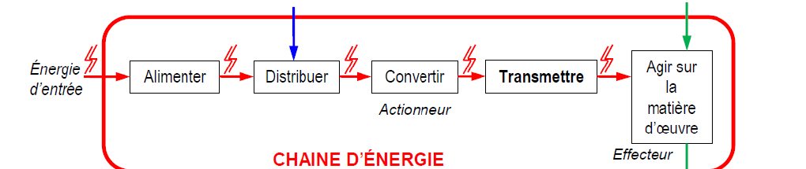
Sans changer le type d'énergie (mécanique pour la plupart des systèmes étudiés en CPGE), les systèmes de transmission de puissance l'adaptent pour qu'elle soit utilisable par l'effecteur.
Les systèmes de transmission de puissance mécanique les plus courants sont :
- Les transformateurs de mouvement (transforment la nature du mouvement) :
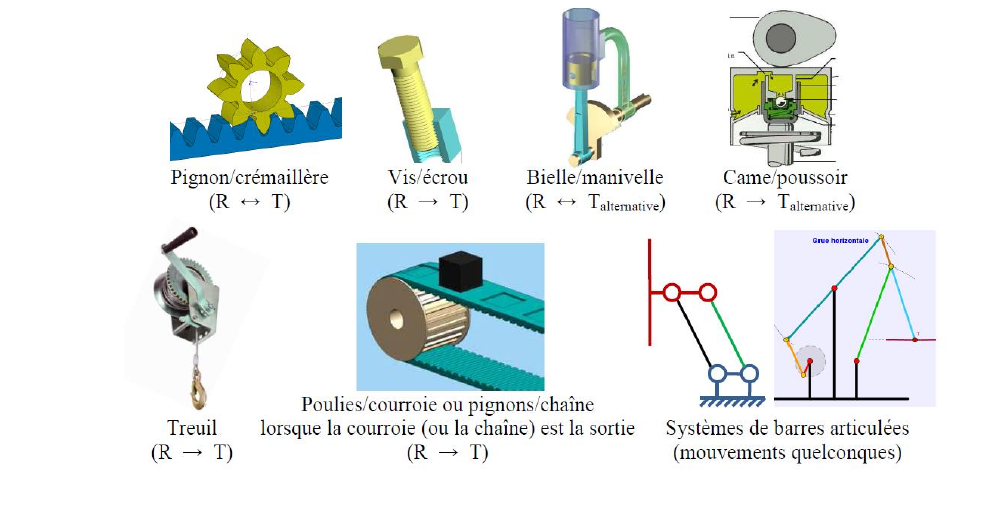
- Les adaptateurs de mouvement sans transformation (même nature du mouvement E/S) : engrenage, poulie-courroie
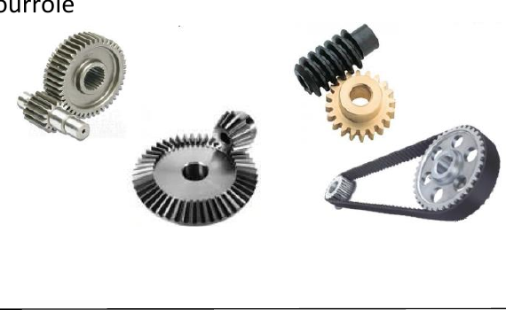
- Les accouplement (ou joint de transmission), embrayage et frein :
- Accouplement : permet l'entrainement d'un système par un autre (dont les axes peuvent être non alignés) ;
- Embrayage : accouplement temporaire ;
- Frein : embrayage dont l'un des deux systèmes est le bâti.
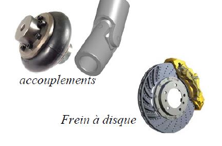
- Les limiteur, régulateur, boîte de vitesse et variateur mécaniques
Un limiteur délivre une vitesse ou un couple en sortie ne pouvant pas dépasser une valeur max.
Un régulateur délivre une vitesse de sortie constante (même si l'entrée varie).
Une boîte de vitesse permet d'obtenir des rapports de transmissions différents.
Un variateur est une boîte de vitesses continue (variation continue du rapport de transmission).
II. Les transformateurs de mouvements
A. Bielle-Manivelle
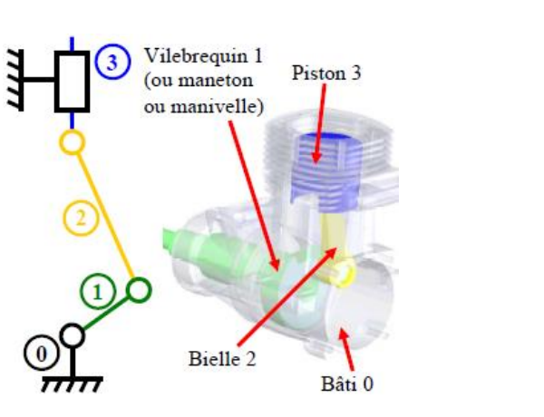
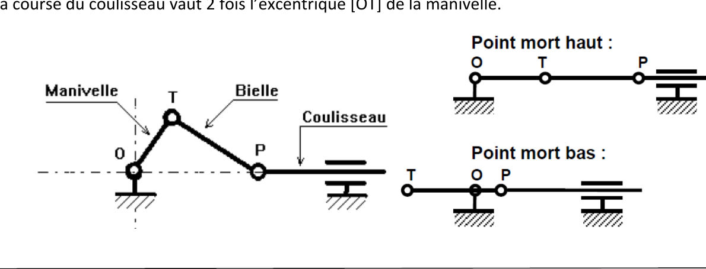
♦ Fonctionnement : La manivelle (ou vilebrequin, ou arbre a excentrique) est en liaison pivot avec le bâti, la bielle transmet le mouvement (mouvement plan), et le coulisseau, en liaison glissière ou pivot glissant avec le bâti, se translate de façon alternative. Deux points morts existent :
- Point mort haut : position la plus éloignée entre le coulisseau et l'axe de rotation de la manivelle ;
- Point mort bas : position du coulisseau opposée au point mort haut.
La course du coulisseau vaut 2 fois l'excentrique [OT] de la manivelle.
♦ Relation des vitesses : Si la vitesse de rotation de la manivelle est constante (uniforme), alors la vitesse du coulisseau varie de façon sinusoïdale, avec 2 instants de vitesse nulle et de changement de sens (les deux points morts).
♦ Rendement : ≈ 40% sans roulements (varie beaucoup selon les matériaux employés).
♦ Réversibilité : Réversible sous conditions.
La manivelle en entrée fonctionne toujours.
Le coulisseau en entrée ne fonctionne que si l'on parvient à franchir les points morts (d'où l'utilisation d'un démarreur pour les moteurs thermiques, et de masses d'équilibrage qui facilitent le franchissement des points morts une fois le système lancé, grâce à l'inertie en rotation de la manivelle).
♦ Exemples d'utilisations industrielles : Les moteurs thermiques utilisent ce système avec le coulisseau (piston) en entrée. Certaines pompes utilisent ce système avec la manivelle en entrée (le piston sert alors à comprimer l'air dans la chambre du cylindre).
B. Pignon-Crémaillère
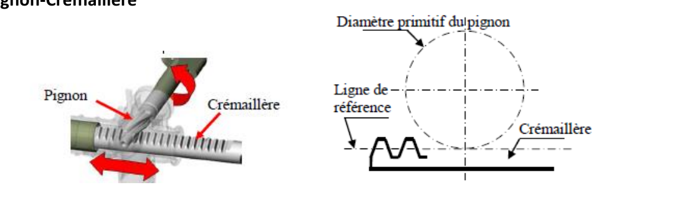
♦ Fonctionnement : La crémaillère est en liaison glissière avec le bâti et le pignon est en liaison pivot avec le bâti. Pignon et crémaillère engrènent au point d'intersection du diamètre primitif du pignon et de la ligne de référence de la crémaillère.
♦ Rendement : ≈ 98%.
♦ Réversibilité : Toujours réversible.
♦ Exemples d'utilisations industrielles : portes de TGV, portes de garage, directions de voiture
C. Vis-écrou (contact glissant ou éléments roulants)
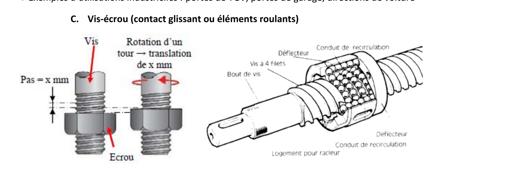
♦ Fonctionnement : La vis et l'écrou sont en liaison hélicoïdale. L'une des deux pièces est en liaison pivot avec le bâti (rotation), l'autre en liaison glissière (translation rectiligne).
♦ Rendement : ≈ 50% pour les contacts directs ; mais jusqu'à 97% pour les vis à billes.
♦ Réversibilité : Réversible sous conditions. La vis en entrée fonctionne toujours.
L'écrou en entrée fonctionne uniquement si l'angle d'hélice de la vis β est supérieur au demi-angle au sommet du cône de frottement φ (f = tan(φ)).
D. Came ou excentrique
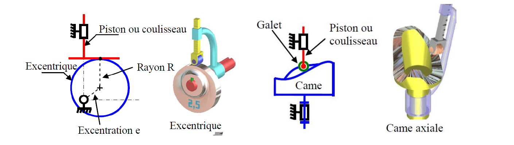
♦ Fonctionnement : La came ou excentrique est en liaison pivot avec le bâti et le coulisseau est en liaison glissière ou pivot glissant avec le bâti. Le contact entre la came et le coulisseau peut être un point ou une ligne courte. Afin de réduire beaucoup les frottements entre la came et le coulisseau, on peut utiliser un galet au bout du coulisseau. Le profil de came est la courbe le long de laquelle le coulisseau appuie. C'est elle qui définit le déplacement du coulisseau selon la position angulaire de la came. Un profil de came peut aussi être intérieur (sillon creuse dans une pièce motrice). Pour un excentrique, c'est la valeur de l'excentration qui définit le déplacement du coulisseau.
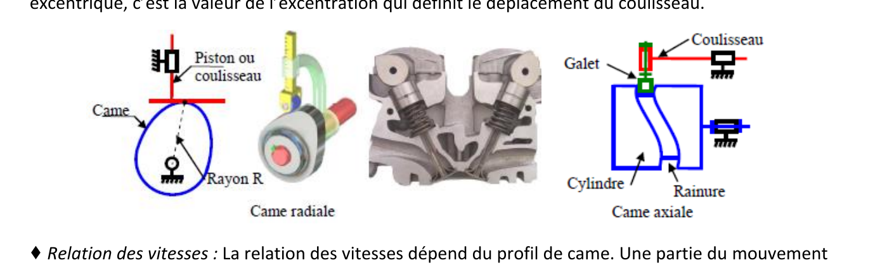
♦ Relation des vitesses : La relation des vitesses dépend du profil de came. Une partie du mouvement de la came peut ne pas entrainer de mouvement du coulisseau.
♦ Rendement : ≈ 35% sans galets (varie beaucoup selon les matériaux employés).
♦ Réversibilité : Irréversible pour un profil extérieur. Peut être en partie réversible, sous conditions, pour un profil intérieur.
♦ Exemples d'utilisations industrielles : pompes hydrauliques, arbres à cames …
E. Croix de Malte
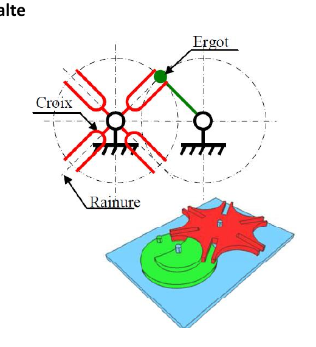
♦ Fonctionnement : A chaque tour de l'arbre d'entrée (avec ergot) la croix de malte tourne d'un quart de tour. Pendant les 3/4 du mouvement d'entrée, la croix ne bouge pas.
♦ Réversibilité : Irréversible.
♦ Exemples d'utilisations industrielles : plateau de machine de transfert, indexage…
F. Double excentrique
♦ Fonctionnement : L'arbre d'entrée tourne en continue tandis que l'arbre récepteur tourne en alternant de sens.
G. Barres articulées
♦ Fonctionnement : Parallélogramme déformable
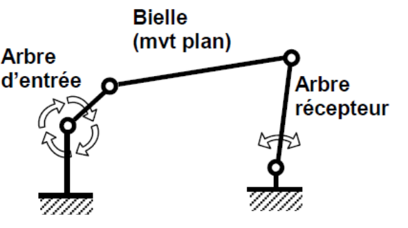
III. Les adaptateurs de mouvement sans transformation
A. Les engrenages
Voir cours de BE du mardi matin sur les trains simples et épicycloïdaux.
B. Le système pignon-chaine
Comme pour les engrenages, la transmission de puissance se fait par obstacle.
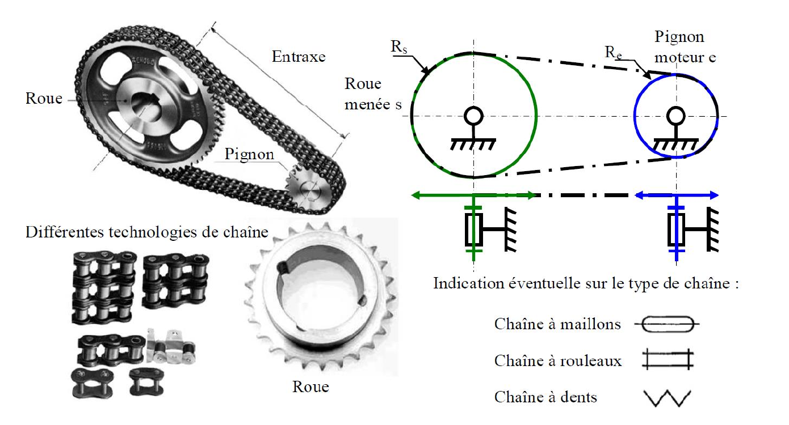
C. Le système poulie-courroie
La transmission se fait ici par l'intermédiaire de l'adhérence entre la poulie et la courroie.
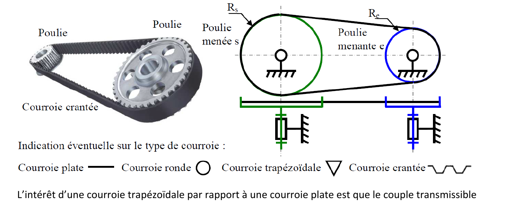
L'intérêt d'une courroie trapézoïdale par rapport à une courroie plate est que le couple transmissible est plus important a tension de pose identique, et que les efforts radiaux sur l'arbre sont moindres à couple transmis identique.
La transmission de puissance par courroie synchrone (ou crantée), associée a des poulies dentées, permet d'éviter le glissement. On les utilise par exemple pour les courroies de distribution d'automobiles ou pour les systèmes asservis en position ou un positionnement précis est nécessaire. L'entrainement ne se fait plus par adhérence, mais par obstacle, comme dans le cas des engrenages. Le dimensionnement de la transmission est essentiellement base sur la capacité de la courroie à supporter l'effort de traction.
Une courroie crantée trapézoïdale n'est pas une courroie synchrone. Les « crans » sont uniquement là pour faciliter l'enroulement de la courroie autour de la poulie.
La valeur de la tension de pose est souvent contrôlée par la mesure de la flèche du brin rectiligne, sous un effort normal F, appliqué en son milieu. L'usure et le vieillissement de la courroie entrainent une diminution progressive de la tension de pose. C'est pourquoi, un système d'entraxe réglable ou un dispositif annexe de tension (galet enrouleur,…) est souvent nécessaire. Cela permet de régler la tension initiale indispensable à l'adhérence et à la transmission de mouvement et cela permet de compenser l'allongement de la courroie au cours du temps.
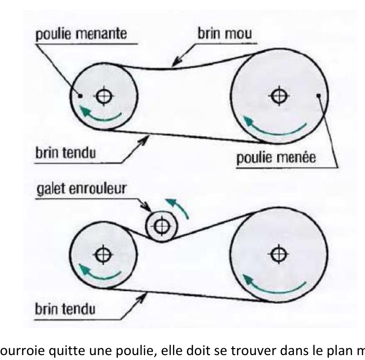
Règle : quand une courroie quitte une poulie, elle doit se trouver dans le plan médian de la poulie réceptrice.
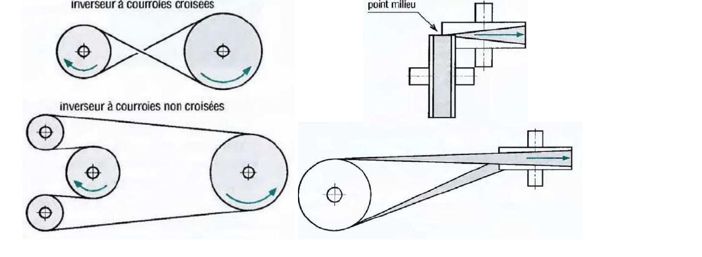
D. Comparatif
| Système de transmission | Avantages | Inconvénients |
|---|---|---|
| Poulie-Courroie | Variation d'entraxe possible ; Souplesse de transmission ; Limiteur de couple (glissement possible) ; Grande durée de vie ; Coût réduit ; $\eta>95\%$ ; Silencieux | Conditions de travail (eau, poussière) ; Rapport de transmission variable… ; Encombrement ; Puissance limitée |
| Chaîne - Pignon | Puissances importantes ; Variation d'entraxe possible ; Synchronisme (obstacle) ; Conditions de travail rudes ; Coût inférieur aux engrenages ; $\eta>98\%$ | Vibrations ; Nécessité de lubrification ; Nécessité d'un carter ; Bruit important ; $r>\frac18$ |
| Engrenages | Puissance très élevée ; Durée de vie élevée ; Orientation des arbres quelconques ; Précision de la transmission ; $\eta>98\%$ | Nécessité de lubrification ; Nécessité d'un carter ; Usinage soigneux et entraxe très précis ; Coût important ; $r>\frac17$ |
IV. Les accouplements
A. Accouplements rigides
Voir cours de BE du mardi matin sur les liaisons encastrement.
B. Accouplements entre arbres alignés
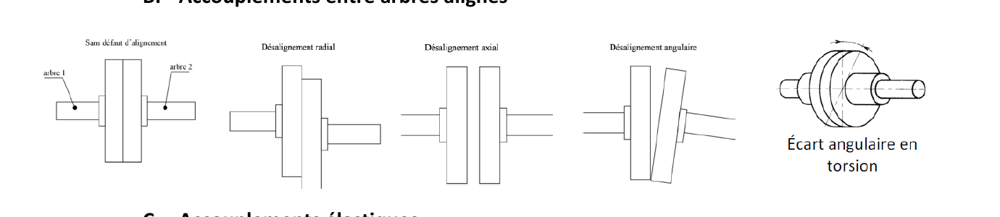
C. Accouplements élastiques
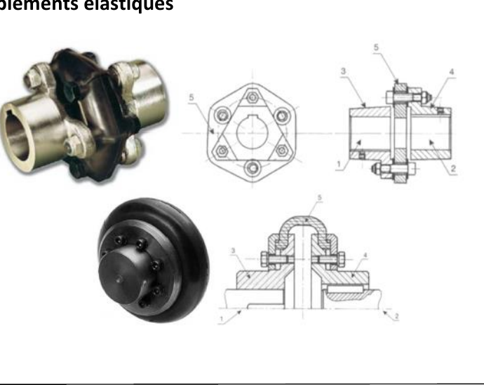
D. Accouplements flexibles
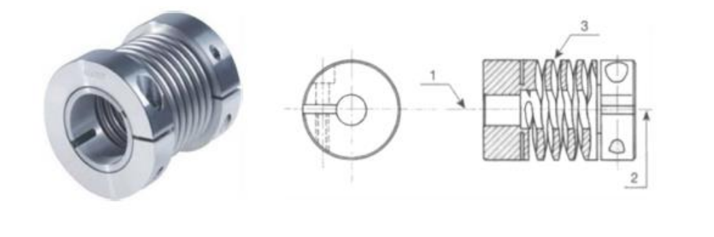
E. Joint de Oldham
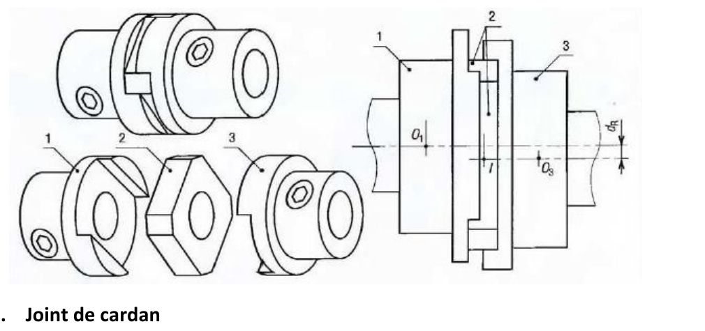
F. Joint de cardan
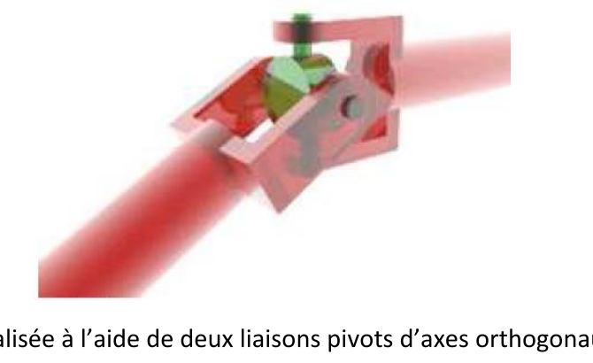
La liaison sphérique à doigt est réalisée à l'aide de deux liaisons pivots d'axes orthogonaux, en série.
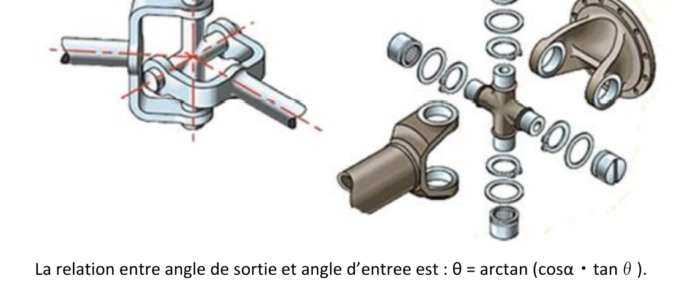
La relation entre angle de sortie et angle d'entree est : $\theta_s = \arctan(\cos\alpha \cdot \tan\theta_e)$.
En pratique, l'angle de brisure (entre les arbres sécants) est au maximum de 40 degrés
Remarques :
- On peut réaliser un joint d'accouplement homocinétique (la vitesse de rotation de sortie reste à tout instant égale a la vitesse de rotation d'entrée) avec deux cardans.
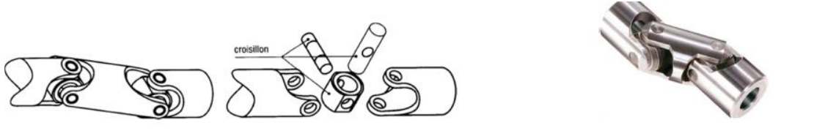
- Dans l'automobile, parlez d'un joint de cardan et un abus de langage, il s'agit en fait d'un joint tripode et Rzeppa qui sont associés.
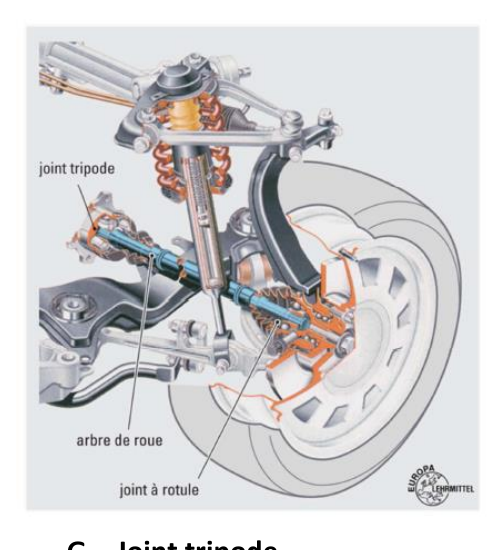
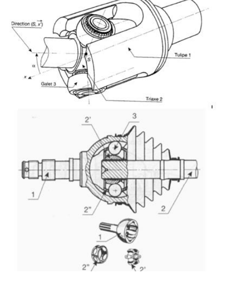
G. Joint tripode
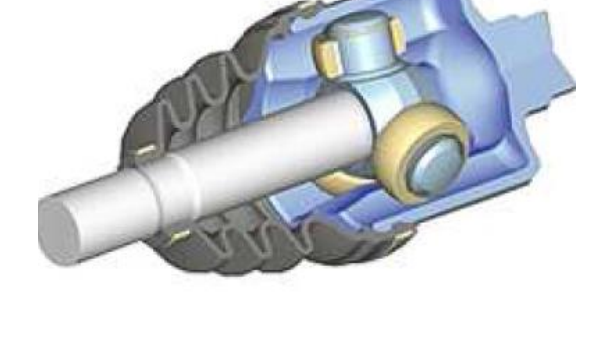
H. Joint Rzeppa
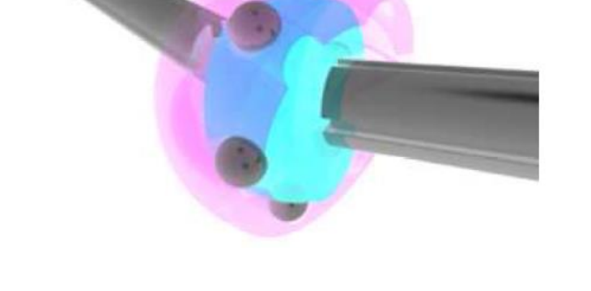
I. Roue libre et roue à cliquets
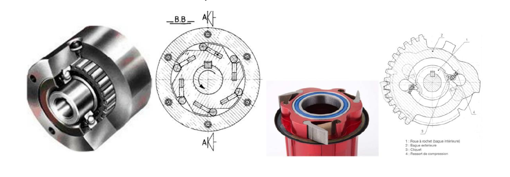
La roue libre permet de transmettre la puissance entre deux arbres, mais uniquement pour un sens de rotation. C'est une transmission unidirectionnelle.
J. Embrayage
L'embrayage est un mécanisme qui permet d'accoupler ou de séparer, progressivement ou non, les arbres respectivement solidaires du moteur et du récepteur.
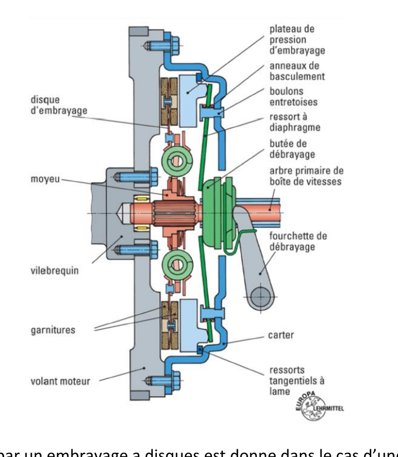
Le couple transmissible par un embrayage a disques est donne dans le cas d'une modélisation a pression de contact uniforme par :
1. Principe d'un embrayage mono disque automobile
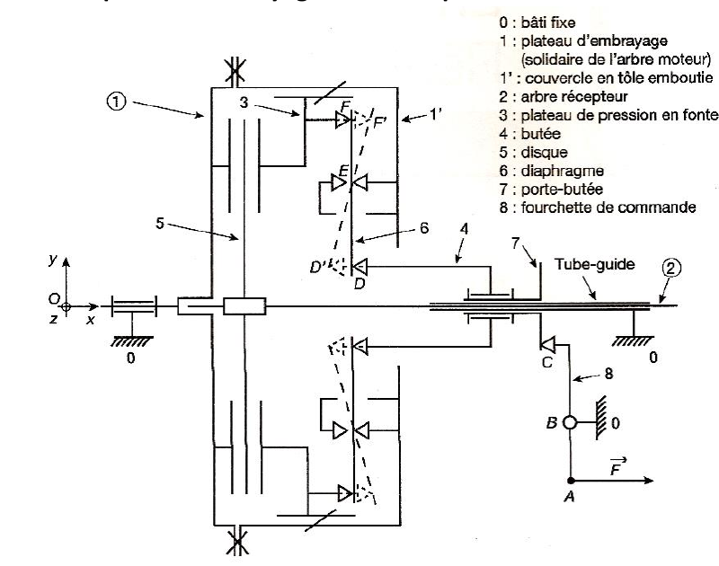
Le débrayage est commandé par la fourchette 8 actionnée en A (Câble, commande hydraulique…) qui entraîne grâce au contact en C, la translation de l'ensemble {4,7}. L'effort axial en D entre la butée 4 et le diaphragme 6 entraîne la déformation élastique de ce dernier autour du point E. Ainsi le plateau 3 libère le disque 5 *, lequel est en liaison glissière d'axe Ox sur l'arbre récepteur 2.
L'embrayage se fait par relâchement de l'effort en A et le retour du diaphragme dans sa position d'origine, lequel vient générer l'effort presseur sur le plateau 3.
2. Nature des matériaux de friction
Le matériau de friction rapporté sur le disque (collé ou riveté) est un composite comprenant des fils spéciaux, tissés, agglomérés par des liants à forte résistance thermique et mécanique. Les principales qualités d'une garniture de friction sont :
- Facteur de frottement (directement lié au couple transmissible)
- Résistance à l'usure (détermine la durée de vie)
- Constance des caractéristiques (quelque soit le degré d'usure)
- Résistance à l'effet de centrifugation
- Résistance à la chaleur
3. Amortissement et couple à transmettre
En général, le disque d'embrayage ne se limite pas à un simple plateau en tôle muni de garnitures. La liaison entre la périphérie du disque a solidaire de la garniture et le moyeu central b est le plus souvent élastique. Ainsi le disque d'embrayage assure un rôle d'amortisseur de couple. Il évite les effets oscillations de couple propres aux moteurs thermiques classiques.
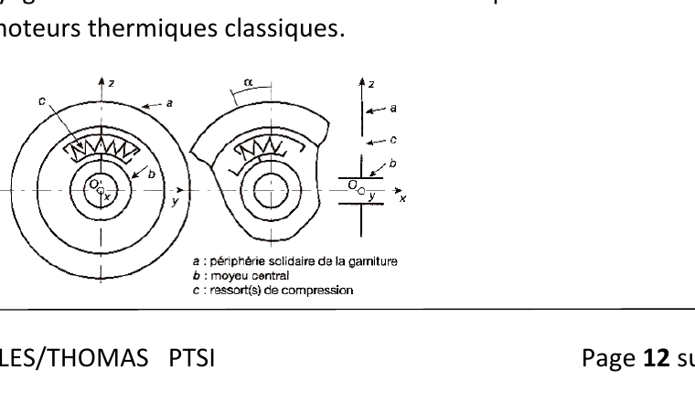
Des ressorts de compressions c assurent l'élasticité de la liaison pivot a/b (Débattement de l'ordre de 15°). Ils n'entrent pas tous en action simultanément et leurs raideurs sont judicieusement choisies différentes. Il est ainsi possible d'obtenir une courbe d'amortissement pour laquelle le débattement angulaire n'est pas proportionnel au couple transmis.
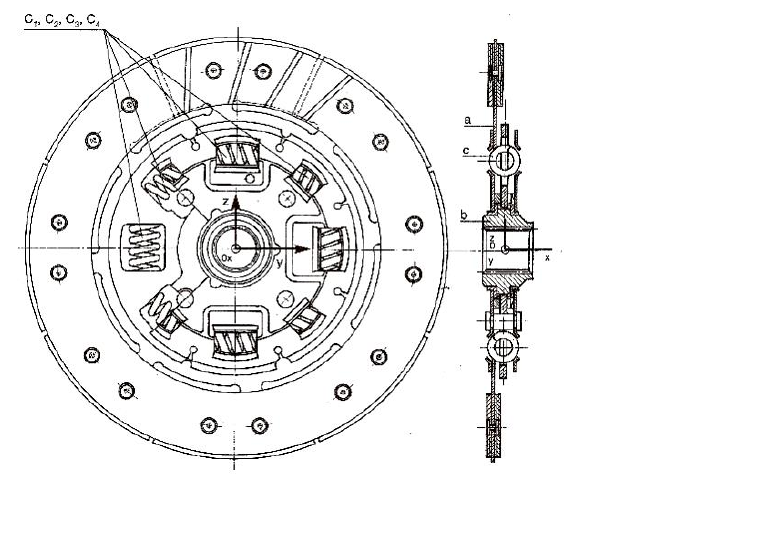
4. Exemples de réalisations
a- Embrayage mono disque à commande par câble, à diaphragme
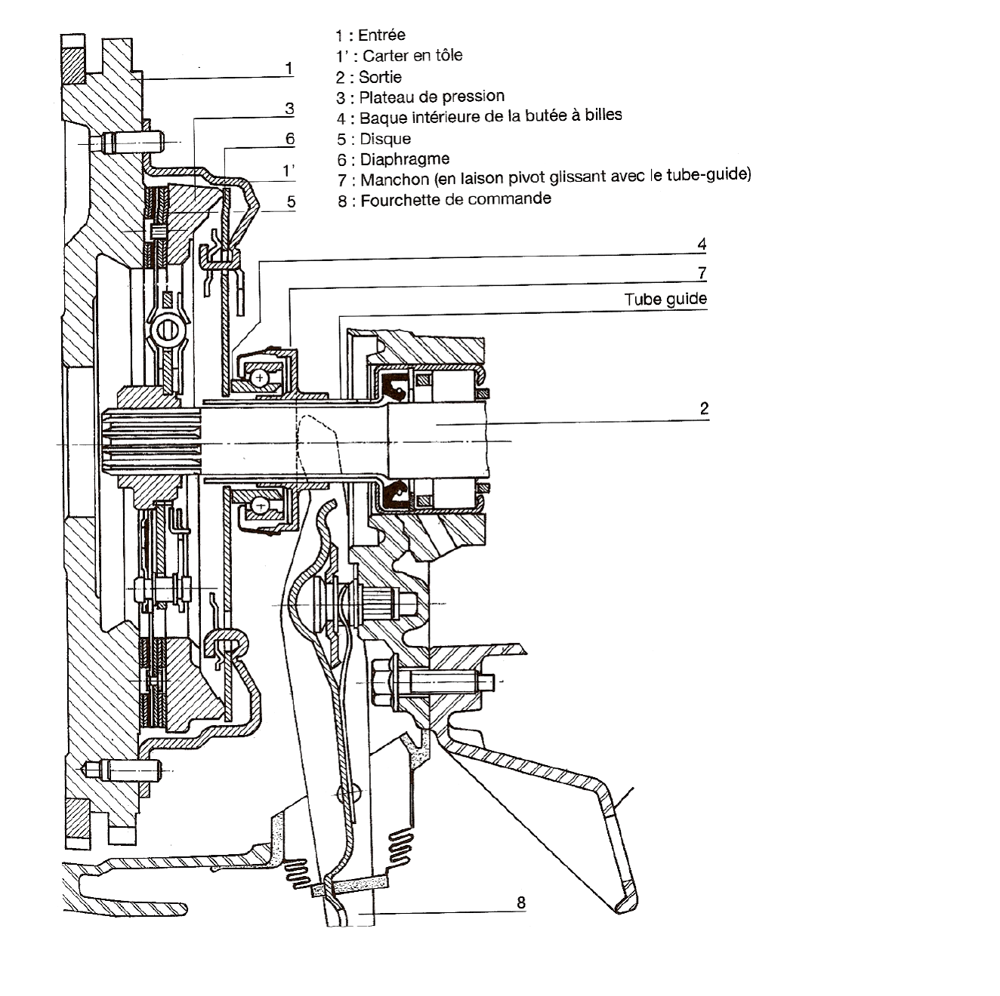
b- Embrayage multi disque à commande pneumatique ou hydrauliqu
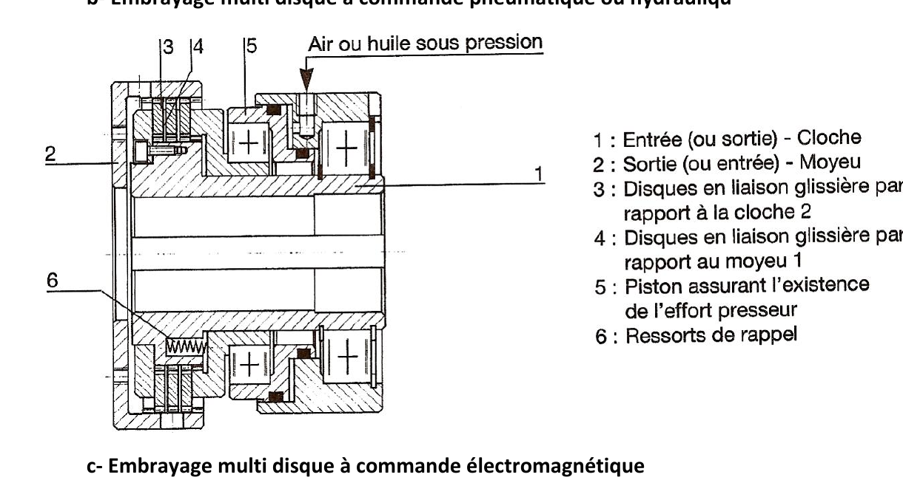
c- Embrayage multi disque à commande électromagnétique
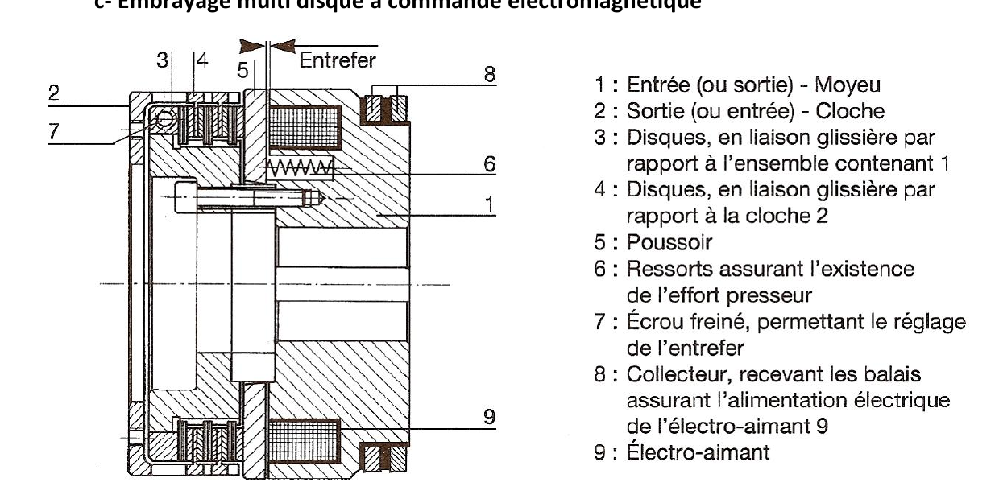
K. Limiteurs de couple
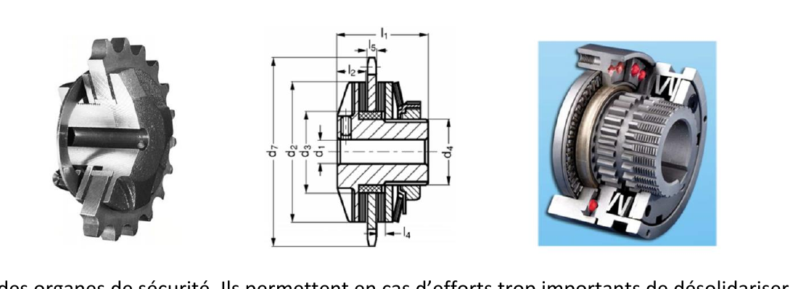
Ce sont des organes de sécurité. Ils permettent en cas d'efforts trop importants de désolidariser l'arbre d'entrée et l'arbre de sortie.
Les autres systèmes de régulation seront abordés en BE du mardi matin.
V. Couplage hydraulique et frein
L. Couplage hydraulique
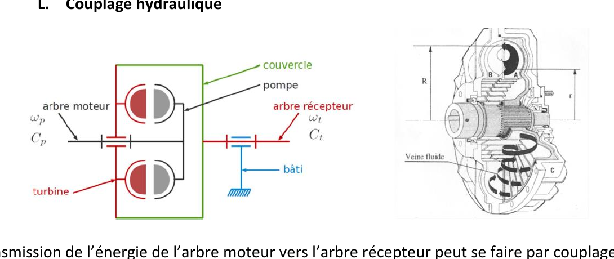
La transmission de l'énergie de l'arbre moteur vers l'arbre récepteur peut se faire par couplage hydraulique. Une roue à aubes « pompe » fournit l'énergie cinétique au fluide hydraulique. La roue a aubes « turbine » transforme cette énergie cinétique en énergie mécanique de rotation. Le couvercle assure l'étanchéité. Il n'y a pas de liaison mécanique entre l'arbre d'entrée et l'arbre de sortie. Le coupleur filtre en partie les phénomènes vibratoires.
M. Frein
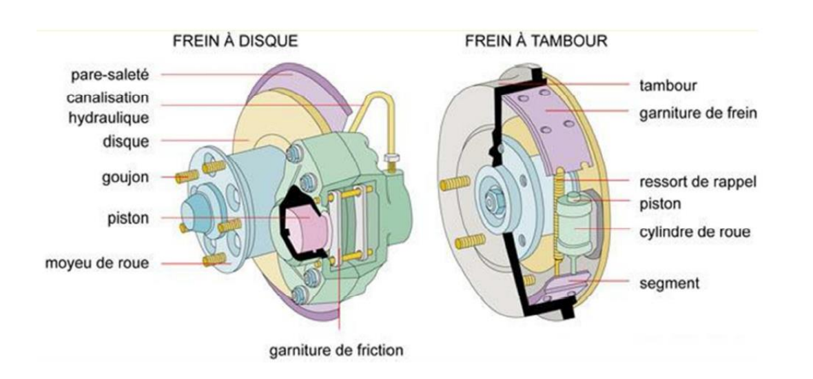
Dans le cas des freins, la fonction est le plus souvent de ralentir ou d'arrêter l'arbre en mouvement. Beaucoup de systèmes de freinage existent : freins à tambours, à disques pour les plus fréquents.
Quiz de fin de chapitre
Sources
- Cours « Transmission de puissance — Généralités », Prot / Chauvin / Mathurin / Pessoles / Thomas (PTSI), document retrouvé via aroux-sii.fr : aroux-sii.fr (site protégé par mot de passe — mot de passe d'accès :
psi*2627). - Document original (PDF) : 11-2026-09-19_SI_Cours_Cinematique-Complements-Transmission-de-puissance-generalites.pdf.
- Relation cinématique du joint de cardan simple : tout manuel de référence de mécanique/SI prépa (ex. H-Prépa Sciences Industrielles) ou joint de cardan.
- Formule du couple transmissible par embrayage à disques (modèle à pression uniforme) : tout manuel de référence de mécanique/SI prépa (ex. H-Prépa Sciences Industrielles, chapitre embrayages/freins).
- Programme officiel de Sciences Industrielles pour l'Ingénieur, CPGE 1re année (filière PCSI) : enseignementsup-recherche.gouv.fr.